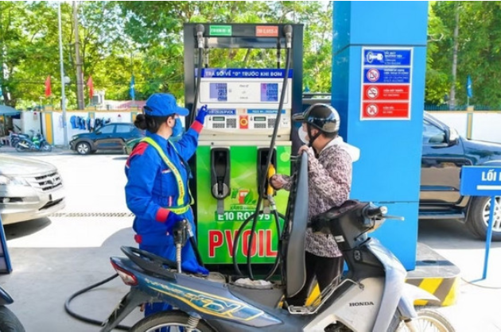

Cùng Bộ Công thương giải đáp 85 câu hỏi về xăng E10
Trước bối cảnh xăng E10 được triển khai toàn quốc từ ngày 1/6, Bộ Công thương đã đứng ra giải đáp hàng loạt thắc mắc của người dân về loại xăng vẫn còn mới mẻ.
Kể từ 1/6/2026, xăng E10 chính thức được đưa vào sử dụng trên phạm vi toàn quốc. Nhằm giải đáp những thắc mắc và hoá giải các hiểu lầm không đáng có, Bộ Công thương đã tổng hợp bộ 85 câu hỏi về vấn đề này.

Xăng sinh học là gì, sử dụng ra sao?
- Câu 1: Nhiên liệu sinh học là gì?
Trả lời: Nhiên liệu sinh học là một dạng nhiên liệu được sản xuất từ các nguyên liệu có nguồn gốc sinh học như: ngô, sắn, mía, phụ phẩm nông nghiệp, lâm nghiệp, dầu thực vật, mỡ động vật, chất thải hữu cơ…
- Câu 2: Xăng khoáng (nền) là gì?
Trả lời: Xăng khoáng (nền) là các loại xăng khoáng không chì như: RON92, RON95…
- Câu 3: Ethanol sinh học là gì?
Trả lời: Sản phẩm của quá trình lên men, chưng cất các nguyên liệu có nguồn gốc sinh học thực vật, tên tiếng Việt hay gọi là cồn etylic, trong lĩnh vực nhiên liệu hay gọi là E100.
- Câu 4: Xăng sinh học, xăng E5, E10 là gì?
Trả lời: Xăng sinh học, xăng E5, E10 là hỗn hợp giữa E100 sinh học và xăng nền và với tỉ lệ phối trộn theo khối lượng E100/xăng nền lần lượt là 4-7.5% (E5) và 8-10% (E10).
- Câu 5: Lộ trình nhiên liệu sinh học tại Việt Nam có từ khi nào?
Trả lời: Năm 2012, tại Quyết định số 53/2012/QĐ-TTg ngày 22-11-2012 của Thủ tướng Chính phủ, theo đó từ ngày 1-12-2015 phân phối xăng E5 trên địa bàn cả nước và từ ngày 1-12-2017 phân phối xăng E10 trên địa bàn cả nước.
- Câu 6: Trước thời điểm ngày 1-6-2026, trên thị trường có các loại xăng phổ biến nào?
Trả lời: Trước thời điểm ngày 1-6-2026, trên thị trường có các loại xăng phổ biến là E5RON92 và RON95.
- Câu 7: Nội dung chính của Thông tư số 50/2025/TT-BCT, ngày 7-11-2025 là gì?
Trả lời: Nội dung chính của Thông tư số 50/2025/TT-BCT cụ thể từ ngày 1-6-2026, xăng không chì (theo Quy chuẩn kỹ thuật quốc gia hiện hành) phải phối trộn, pha chế thành xăng E10 để sử dụng cho động cơ xăng trên toàn quốc. Thông tư cũng nêu rõ tiếp tục phối trộn, pha chế xăng E5RON92 để sử dụng cho động cơ xăng đến hết ngày 31-12-2030.
- Câu 8: Xe máy, ô tô và động cơ xăng nào dùng được xăng E10?
Trả lời: Hầu hết các loại xe máy và ô tô đang lưu hành trên lãnh thổ Việt Nam đều sử dụng được xăng E10 (ngoại trừ một dòng xe tải hạng nhẹ sản xuất từ 1996 đến 2023 thì dừng sản xuất và một số ít xe máy đời cũ của Suzuki chưa khẳng định sự tương thích với E10). Các động cơ máy cắt cỏ, bơm nước, thổi lá, máy nông nghiệp dùng xăng… sản xuất những năm gần đây đều tương thích với xăng E10.
- Câu 9: Xe máy, ô tô và động cơ xăng nào nên dùng xăng E5?
Trả lời: Xăng khoáng (nền) là các loại xăng khoáng không chì như: RON92, RON95…
- Câu 2: Xăng khoáng (nền) là gì?
Trả lời: Các xe ô tô, xe máy, động cơ máy cắt cỏ, bơm nước, máy thổi lá, máy nông nghiệp dùng xăng… quá cũ, không khẳng định sự tương thích với xăng E10.
- Câu 10: Có cần điều chỉnh động cơ khi chuyển sang dùng E10 không?
Trả lời: Thông thường không cần điều chỉnh động cơ khi chuyển sang dùng E10, tuy nhiên đối với các động cơ đời cũ, nên tham khảo ý kiến các chuyên gia.
- Câu 11: Có cần súc bình xăng trước khi chuyển sang E10 không?
Trả lời: Thông thường không cần. Tuy nhiên nếu xe quá cũ và bình xăng có hiện tượng han rỉ thì nên vệ sinh bình sạch các han rỉ trước khi dùng E10.
- Câu 12: E10 có làm hỏng động cơ không?
Trả lời: Các thử nghiệm của các nhà khoa học trong nước và quốc tế cũng như thực tế sử dụng xăng E10 tại các nước đã sử dụng trong nhiều năm qua chưa ghi nhận bằng chứng E10 làm hỏng động cơ?
Xăng sinh học có làm hao xăng, yếu hay nóng máy không?
- Câu 13: E10 có làm xe yếu hơn không?
Trả lời: Khó nhận thấy sự khác biệt rõ rệt trong điều kiện vận hành bình thường. Tuy nhiên nếu bình xăng và đường dẫn có rỉ sét, cặn thì với khả năng hòa tan cao hơn của Ethanol, các cặn, rỉ này có thể bị hòa tan gây tắc, giảm lưu lượng xăng bơm vào buồng đốt làm xe “yếu” đi.
- Câu 14: E10 có làm hao xăng hơn không?
Trả lời: Đối với một số loại xe trong một số thử nghiệm có ghi nhận chênh lệch tiêu hao nhiên liệu nhiều hơn so với xăng khoáng cùng loại ở khoảng 2-3%. Tuy nhiên cũng có loại xe trong một số thử nghiệm thì lại cho kết quả ngược lại, xăng E10 đi được quãng đường dài hơn. Nguyên nhân là Ethanol có nhiệt trị thấp hơn xăng khoáng, song khi có 10% Ethanol trong xăng, hỗn hợp nhiên liệu cháy triệt để hơn, do đó bù lại công suất cho nhiệt trị thấp.
- Câu 15: E10 có làm nóng máy hơn không?
Trả lời: Không có bằng chứng cho thấy E10 gây nóng máy bất thường nếu phương tiện vận hành đúng kỹ thuật
- Câu 16: E10 có gây ăn mòn động cơ không?
Trả lời: Các thử nghiệm khoa học khẳng định mặc dù Ethanol có tính ăn mòn cao hơn xăng khoáng, song tác động ăn mòn của xăng E10 đến các chi tiết động cơ là rất nhỏ và hầu hết phương tiện hiện nay đã được thiết kế để tương thích và sử dụng các vật liệu phù hợp với E10.
- Câu 17: E10 có hút nước không?
Trả lời: Ethanol có khả năng hấp thụ ẩm cao hơn xăng khoáng, do đó với xăng E10 không nên tồn trữ quá lâu, đảm bảo bình chứa được nắp kín, tránh để nước, hơi ẩm xâm nhập vào xăng.
Việc tách nước với xăng E10 được hiểu ra sao?
- Câu 18: E10 có dễ bị tách pha không?
Trả lời: Các thử nghiệm thực tế đã chứng minh trong điều kiện lưu chứa trong bình thủy tinh thử nghiệm, để đến 3 tháng, xăng E10 chưa tách pha (công bố gần nhất là của Petrolimex)
- Câu 19: Có nên trữ E10 trong thời gian dài không?
Trả lời: Nên sử dụng nhiên liệu trong thời gian phù hợp và bảo quản đúng quy định.
- Câu 20: Xe ít đi có cần lưu ý gì khi dùng E10?
Trả lời: Khởi động xe định kỳ; kiểm tra nhiên liệu; bảo dưỡng định kỳ theo khuyến cáo của nhà sản xuất.
- Câu 21: E10 có thân thiện môi trường hơn không?
Trả lời: Xăng E10 thân thiện môi trường, E10 làm giảm phát thải khí gây hiệu ứng nhà kính so với xăng khoáng, tùy theo loại xe và điều kiện vận hành, có thể giảm đến 30%.
- Câu 22: Có bao nhiêu nước dùng và tại sao Việt Nam lại dùng xăng E10?
Trả lời: Có khoảng 60 nước dùng xăng E10. Xăng E10 góp phần bảo vệ môi trường sống, giảm biến đổi khí hậu; phát triển ngành công nghiệp nhiên liệu sinh học, tạo đầu ra cho các sản phẩm nông, lâm nghiệp nhằm phát triển kinh tế-xã hội; giảm phụ thuộc vào nhiên liệu hóa thạch đang dần cạn kiệt, phát triển bền vững; đặc biệt là góp phần đảm bảo an ninh năng lượng quốc gia.
- Câu 23: Có nên tự pha ethanol vào xăng không?
Trả lời: Không nên tự pha ethanol vào xăng, phải mua xăng pha đúng theo Quy chuẩn kỹ thuật quốc gia tại các doanh nghiệp kinh doanh xăng dầu. Việc tự ý phối trộn nhiên liệu có thể gây mất an toàn, chất lượng nhiên liệu không đảm bảo, gây hư hỏng động cơ.
- Câu 24: Có nên tự “lọc bỏ ethanol” khỏi E10 không?
Trả lời: Không, việc làm này vi phạm pháp luật, làm giảm chất lượng nhiên liệu, có nguy cơ gây cháy, nổ, hư hỏng động cơ.
- Câu 25: Có nên dùng thêm phụ gia khi sử dụng E10 không?
Trả lời: Không tự ý sử dụng phụ gia nếu không có khuyến cáo kỹ thuật rõ ràng của đơn vị, cá nhân đúng chuyên môn, việc này làm phát sinh chi phí và không tạo ra sự khác biệt nào đối với động cơ trong điều kiện hoạt động bình thường.
- Câu 26: Có cần thay dầu nhớt mới khi chuyển sang dùng E10 không?
Trả lời: Không cần khi chưa đến định kỳ phải thay dầu.
- Câu 27: Xăng E10 có an toàn không?
Trả lời: Lưu ý về an toàn đối với xăng E10 không có nhiều khác biệt so với xăng khoáng.
- Câu 28: Người dân cần lưu ý gì khi sử dụng xăng E10?
Trả lời: Người dân cần mua xăng tại cửa hàng uy tín; tránh để xe không hoạt động quá lâu; bảo dưỡng xe định kỳ.
- Câu 29: Xăng E10 có ảnh hưởng đến điều kiện bảo hành xe?
Trả lời: Tất cả các hãng xe ô tô, xe máy sản xuất, lắp ráp tại Việt Nam đều chấp nhận nhiên liệu E10 cho các xe đang và sẽ bán ra, không có E10 trong nội dung loại trừ bảo hành. Người dùng xăng nên tham khảo sổ tay kỹ thuật, khuyến cáo của nhà sản xuất.
Những ý kiến trái chiều về xăng E10
- Câu 30: Vì sao có ý kiến trái chiều về xăng E10 trên mạng xã hội?
Trả lời: Tâm lý e ngại thay đổi, chưa có đủ thông tin chính xác về ý nghĩa của xăng sinh học, cũng như xăng E10 có ảnh hưởng xấu đến động cơ không…; câu like, câu view; trục lợi để bán phụ tùng, phụ gia.
- Câu 31: Xăng E10 có gây mùi khác xăng thường không?
Trả lời: Một số trường hợp có thể cảm nhận mùi thơm nhẹ đặc trưng của Ethanol.
- Câu 32: E10 có màu đặc trưng không?
Trả lời: Hiện chưa có quy định chung về màu cho xăng E10, do đó E10 có thể có nhiều màu khác nhau tùy thuộc vào xăng nền dùng để pha chế E10, và vì vậy màu sắc không ảnh hưởng đến chất lượng xăng.
- Câu 33. Xăng E10 có ảnh hưởng đến khả năng khởi động xe không?
Trả lời: Xăng E10 không ảnh hưởng đến khả năng khởi động xe trong điều kiện vận hành bình thường.
- Câu 34: Xăng E10 có dùng được cho máy phát điện, tàu thuyền nhỏ không?
Trả lời: Có, đối với các máy và phương tiện sản xuất những năm gần đây. Tuy nhiên nên kiểm tra hướng dẫn của nhà sản xuất và không để nhiên liệu tồn lâu trong máy, giữ kín bình chứa.
- Câu 35: Làm sao để người dân yên tâm sử dụng xăng E10?
Trả lời: Minh bạch thông tin; Có hướng dẫn, khuyến cáo về sử dụng xăng của cơ quan quản lý và các doanh nghiệp phân phối xăng dầu, doanh nghiệp sản xuất phương tiện, động cơ; kiểm soát chất lượng xăng E10.
- Câu 38: Dư luận quan tâm nhất về E10 hiện nay là gì?
Trả lời: Xe nào dùng được xăng E10? Xe có bị hỏng khi dùng xăng E10 không? Có hao xăng không; giá bán thế nào?
- Câu 39: Nên tìm hiểu thông tin về xăng E10 từ đâu?
Trả lời: Từ các cơ quan quản lý nhà nước chuyên ngành ở Trung ương và địa phương; Các doanh nghiệp kinh doanh xăng dầu; Các đơn vị truyền thông chính thống như truyền thanh, truyền hình, báo chí; Các đơn vị nghiên cứu chuyên môn, các chuyên gia có uy tín trong lĩnh vực động cơ, nhiên liệu;
- Câu 40: Thông điệp quan trọng nhất về xăng E10 là gì?
Trả lời: Xăng E10 không chỉ là một loại nhiên liệu mới, mà còn là một giải pháp cho quá trình chuyển đổi năng lượng xanh, giảm phát thải khí nhà kính, phát triển bền vững và đặc biệt là góp phần tự chủ và đảm bảo an ninh năng lượng của Việt Nam.
- Câu 41: Vì sao một số người phản ánh xe chạy “không bốc” khi dùng xăng E10?
Trả lời: Có thể đường dẫn nhiên liệu bị ảnh hưởng bởi cặn bẩn, do tình trạng bảo dưỡng chưa đầy đủ
- Câu 42: Xăng E10 có phù hợp với điều kiện khí hậu nóng ẩm của Việt Nam không?
Trả lời: Các nước có khí hậu tương đồng như Trung Quốc, Thái Lan, Philippines đã sử dụng xăng E10 từ nhiều năm trước.
- Câu 43. Vì sao xăng E10 cần hệ thống bình, bồn chứa kín hơn?
Trả lời: Do ethanol có đặc tính bay hơi và hút ẩm cao hơn xăng khoáng nên bình xăng, bồn chứa, đường ống, hệ thống bảo quản, phân phối cần đáp ứng yêu cầu kỹ thuật phù hợp.
- Câu 44: Người dân có cần thay đổi thói quen sử dụng xe khi dùng xăng E10 không?
Trả lời: Tránh để xe quá lâu không sử dụng, thực hiện bảo dưỡng định kỳ theo khuyến nghị của nhà sản xuất.
- Câu 45: Xe để lâu không sử dụng có nên đổ đầy xăng E10 không?
Trả lời: Không có khuyến cáo nào về việc phải đổ đầy nhiên liệu với xe lâu không sử dụng.
- Câu 46: Xăng E10 có làm tăng nguy cơ cháy nổ không?
Trả lời: Không.
- Câu 47: Vì sao xăng E10 được coi là nhiên liệu chuyển đổi xanh?
Trả lời: Ethanol là nhiên liệu có nguồn gốc từ nguyên liệu có thể tái tạo; tổng phát thải cacbon của cả vòng đời từ trồng nguyên liệu, sản xuất cồn và đốt cháy nhiên liệu được coi là cân bằng phát thải cacbon (Net zero). Xăng E10 giúp giảm phát thải khí gây hiệu ứng nhà kính như cacbon, HC/VOC.
- Câu 48: Xăng E10 có thể thay thế hoàn toàn nhiên liệu hóa thạch không?
Trả lời: Không hoàn toàn, bản thân E10 vẫn chứa đến 90% nhiên liệu hóa thạch.
- Câu 49: Xăng E10 có ảnh hưởng đến bugi không?
Trả lời: Không có bằng chứng về việc này.
- Câu 50: Có nên pha thêm nước vào xăng E10 không?
Trả lời: Tuyệt đối không.
- Câu 51: Xăng E10 có dùng được cho xe phun xăng điện tử không?
Trả lời: Có.
- Câu 52: Xe phân khối lớn có dùng được xăng E10 không?
Trả lời: Có, người dùng nên tham khảo thêm hướng dẫn của hãng xe.
- Câu 53: Xăng E10 có làm thay đổi âm thanh động cơ không?
Trả lời: Trong điều kiện vận hành bình thường, khác biệt về âm thanh khó nhận biết.
- Câu 54: Có phải xăng khoáng càng pha nhiều Ethanol thì càng tốt?
Trả lời: Không hẳn, phải pha chế theo các tỉ lệ phù hợp với khả năng thích ứng của động cơ.
- Câu 55: Vì sao Việt Nam chọn xăng E10 thay vì tỉ lệ Ethanol cao hơn?
Trả lời: Tiếp tục thực hiện lộ trình tại Quyết định số 53 của Thủ tướng, việc chuyển đổi cần thực hiện từng bước, phù hợp thực tế phương tiện hiện nay; bảo đảm lộ trình chuyển đổi an toàn; phù hợp khả năng cung ứng nhiên liệu.
- Câu 56: Xăng E10 có gây đóng cặn động cơ không?
Trả lời: Không.
- Câu 57: Xăng E10 có thể làm sạch hệ thống nhiên liệu không?
Trả lời: Có, do ethanol có đặc tính hòa tan nhất định nên trong một số trường hợp, xăng E10 có thể làm bong, tan cặn cũ trong hệ thống nhiên liệu của xe có hiện tượng bị rỉ, sét, đóng cặn qua đó làm sạch hệ thống.
- Câu 58: Xăng E10 có ảnh hưởng đến dầu nhớt không?
Trả lời: Không có bằng chứng nào về ảnh hưởng xấu của xăng E10 tới dầu máy.
- Câu 59: Có cần dùng phụ gia chống nước khi dùng xăng E10 không?
Trả lời: Không dùng bất kỳ loại phụ gia nào nếu không có khuyến cáo của nhà sản xuất động cơ.
- Câu 60: Vì sao người dân cần đổ xăng E10 tại cây xăng uy tín?
Trả lời: Bảo đảm chất lượng nhiên liệu; tránh nhiên liệu pha trộn không đạt chuẩn; hạn chế nguy cơ hư hại động cơ.
- Câu 61. Vai trò của E10 trong ổn định thị trường xăng dầu?
Trả lời: Đa dạng hóa, hạn chế nguy cơ đứt gãy nguồn cung năng lượng; giảm phụ thuộc nhiên liệu hóa thạch nhập khẩu; phát huy tiềm năng lớn về nguyên liệu cho sản xuất E100 của Việt Nam.
- Câu 62: Xăng E10 có tạo thêm việc làm không?
Trả lời: Có, việc làm trong nông nghiệp, trong công nghiệp sản xuất Ethanol, trong chuỗi cung ứng, logistics.
- Câu 63. Vì sao xăng E10 liên quan đến mục tiêu Net Zero?
Trả lời: Giảm đốt 1 lít xăng khoáng là giảm phát thải từ 2,3 đến 2,5 kg khí CO2.
- Câu 65: Xăng E10 có phải là giải pháp duy nhất cho giao thông xanh không?
Trả lời: Không, còn nhiều giải pháp khác như xe điện, xe lai điện hybrid; xe sử dụng nhiên liệu hydro xanh…
- Câu 66: Điều quan trọng nhất để triển khai xăng E10 thành công là gì?
Trả lời: Sự chung tay của cả hệ thống chính trị và sự ủng hộ của người dùng xăng.
- Câu 67: Khi chuyển sang dùng xăng E10, xe có cần chạy “rodai” lại không?
Trả lời: Không
- Câu 68: Xăng E10 có ảnh hưởng đến hệ thống điều hòa hoặc điện trên xe không?
Trả lời: Không
- Câu 69: Xăng E10 có làm thay đổi màu sắc khí thải không?
Trả lời: Không
Chất lượng và mức độ ảnh hưởng động cơ của xăng sinh học
- Câu 70: Người dân có thể tự phân biệt xăng E10 bằng mắt thường không?
Trả lời: Không, do xăng E10 được phối trộn theo tiêu chuẩn kỹ thuật và khó phân biệt bằng cảm quan thông thường.
- Câu 71: Vì sao việc kiểm tra chất lượng xăng E10 tại cây xăng rất quan trọng?
Trả lời: Để bảo đảm xăng phân phối tới người tiêu dùng có chất lượng đúng Quy chuẩn kỹ thuật quốc gia.
- Câu 72: Xăng E10 có ảnh hưởng đến cảm biến động cơ không?
Trả lời: Với các phương tiện tương thích nhiên liệu, xăng E10 không gây ảnh hưởng bất thường đến cảm biến động cơ.
- Câu 73. Nếu lỡ đổ nhầm xăng E10 cho xe cũ (có thể không tương thích) thì có nguy hiểm không?
Trả lời: Trong đa số trường hợp không gây sự cố ngay lập tức.
- Câu 74. Xăng E10 có gây ảnh hưởng khi đi đường dài không?
Trả lời: Không, xăng E10 hoàn toàn sử dụng bình thường cho đi lại đường dài.
- Câu 75. Vì sao cần truyền thông rõ ràng về xăng E10?
Trả lời: Do đây là loại nhiên liệu liên quan trực tiếp đến phương tiện đi lại, hoạt động sản xuất, kinh doanh, sinh hoạt, tài sản cá nhân, chi phí sử dụng hằng ngày của người sử dụng.
- Câu 76: Xăng E10 có phải là bước đệm cho các loại nhiên liệu sạch hơn trong tương lai không?
Trả lời: Có, xăng E10 là một trong các giải pháp chuyển đổi nhiên liệu phát thải thấp; giao thông xanh; phát triển bền vững.
- Câu 77: Người dân nên làm gì trước những thông tin không có kiểm chứng về xăng E10?
Trả lời: Kiểm chứng thông tin từ các nguồn chính thống; không chia sẻ thông tin khi chưa được xác minh.
- Câu 78: Xăng E10 có ảnh hưởng đến khả năng leo dốc hoặc chở nặng không?
Trả lời: Không.
- Câu 79: Xăng E10 có thể sử dụng trong mùa nắng nóng kéo dài không?
Trả lời: Có thể sử dụng bình thường theo các khuyến nghị của nhà sản xuất động cơ.
- Câu 80: Người dân cần làm gì nếu phát hiện nhiên liệu có dấu hiệu bất thường?
Trả lời: Dừng sử dụng nếu nghi ngờ chất lượng nhiên liệu; phản ánh tới cơ quan chức năng hoặc đơn vị cung cấp nhiên liệu; kiểm tra phương tiện tại cơ sở kỹ thuật uy tín.
- Câu 81: Vì sao không duy trì song song cả xăng khoáng và xăng sinh học?
Trả lời: Nhằm đạt mục tiêu chuyển đổi xanh, giảm phụ thuộc vào nhiên liệu hóa thạch, góp phần tự chủ và đảm bảo an ninh năng lượng quốc gia.
- Câu 82: Cơ sở pháp lý nào cho việc chuyển đổi sang E10?
Trả lời: Các nghị quyết, quyết định về năng lượng của Đảng và Nhà nước; Quyết định số 53/2012/QĐ-TTg của Thủ tướng Chính phủ về quy định lộ trình áp dụng tỉ lệ phối trộn nhiên liệu sinh học với nhiên liệu truyền thống tại Việt Nam.
- Câu 83. Cơ quan quản lý đã nghiên cứu kỹ các ảnh hưởng của xăng E10 đến động cơ xăng chưa trước khi ban hành lộ trình?
Trả lời: Đã nghiên cứu, thử nghiệm trong nước, tham khảo tài liệu, kinh nghiệm từ các quốc gia sử dụng xăng sinh học từ nhiều chục năm trước, tổ chức hội thảo trong nước, quốc tế để tham vấn chuyên gia.
- Câu 84. Nếu phương tiện bị hỏng do việc sử dụng xăng E10 gây ra thì cơ quan, đơn vị nào chịu trách nhiệm?
Trả lời: Nếu có đủ bằng chứng chứng minh là lỗi do xăng E10 gây ra thì trước hết là đơn vị cung cấp xăng E10 chịu trách nhiệm, sau đó đến cơ quan nhà nước quản lý xăng dầu.
- Câu 85: Thông điệp cuối cùng dành cho người sử dụng xăng E10 là gì?
Trả lời: Xăng sinh học nói chung và E10 nói riêng là một giải pháp trong xu hướng chuyển đổi năng lượng xanh đang diễn ra trên toàn cầu. Việc sử dụng E10 góp phần bảo vệ môi trường, phát triển bền vững, thúc đẩy phát triển kinh tế, xã hội và đặc biệt là góp phần bảo đảm an ninh năng lượng quốc gia; cần hiểu đúng; sử dụng đúng; duy tu, bảo dưỡng động cơ đúng khuyến nghị của nhà sản xuất.